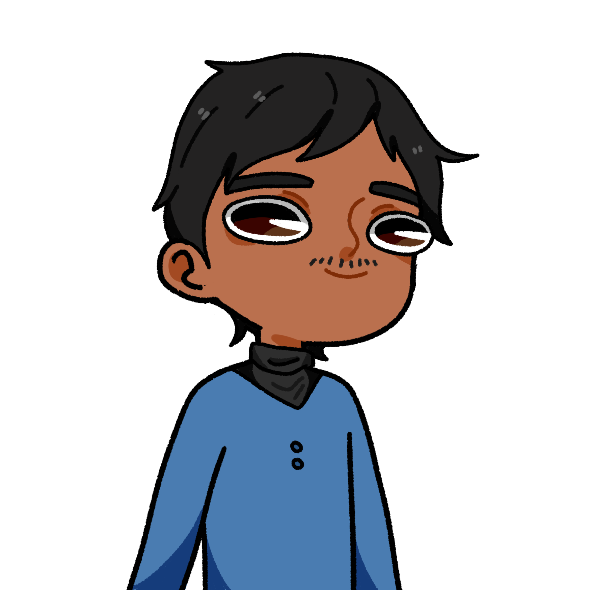

C’est génial, cette sensation de vitesse !
C’est génial, cette sensation de vitesse !
 On s’est déjà fait flasher 4 fois ! Arrête de rouler à 235 km/h !
On s’est déjà fait flasher 4 fois ! Arrête de rouler à 235 km/h !
C’est pour arriver plus vite ! Tu veux retrouver Léopold oui ou non ?
On va pas le retrouver si on finit dans un camion !
T’inquiètes je gère ! En plus on est quasiment arrivés !
L’imposante architecture de l’aéroport se dressait devant eux. Samy se gara, et ils entrèrent dans l’immense hall. Une douce musique de piano parvenait jusqu’à leurs oreilles, au milieu du vacarme.
Comment on va retrouver Léopold là-dedans ? C’est immense et remplit !
Comme ton cul ?
Hein ?
Laisse tomber…
Après cet échec de blague, ils avancèrent dans le but de trouver un membre du personnel capable de les renseigner. Si Léopold avait un bureau ici, il était forcément nommé quelque part.
Eh Samy !
Yep ?
J’ai réfléchi à toute cette histoire, et du coup je me disais… On devrait choisir quel camp ?
Bah le Sophisme évidemment ! Sérieux, la décadence de ceux qui se branlent sur du hentai… Et puis, tu vas pas trahir Léopold quand même ?
Bien sûr que non ! C’était juste pour savoir…
Au fond de lui pourtant, il savait qu’il rêvait de passer sa vie avec Ahri, mais ce n’était que des pulsions sexuelles… Rien ne pouvait remplacer son amour pour Léopold. Oui, il en était sûr maintenant : il était amoureux. La musique jouée par le piano changea. Elle le sortit de sa réflexion, il était sûr de l’avoir déjà entendu…
Eh mais ça serait pas…
Romain ? Qu’est-ce que tu fais là ?
Romain leva les yeux du piano sans s’arrêter de jouer.
 Bah je devais faire un truc ici, donc j’en ai profité pour faire une petite pause et… Mais attendez… Qu’est-ce que vous vous faites ici ?
Bah je devais faire un truc ici, donc j’en ai profité pour faire une petite pause et… Mais attendez… Qu’est-ce que vous vous faites ici ?
On se balade.
Me prend pas pour un abruti. Vous n’avez rien à faire ici !
Et pourquoi ça ?
Parce que vu ce qui arrive, vous allez passer un sale quart d’heure…
Ah ! Donc tu sais des choses ! Maintenant tu vas nous d…
 Comme on se retrouve !
Comme on se retrouve !
Et merde !
Je vous aurais prévenu.
Qu’est-ce que vous faites ici ?
Quoi ? Tu aussi tu…
Exact ! Pour avoir les meilleures trajectoires possibles, je suis venu faire des tests avec des professionnels !
Ah… ok.
Dis-donc Camille, pourquoi tu ne nous montrerais pas tes supers talents de pianiste ?
Enfin quelqu’un qui reconnais mon génie ici ! Je vais de ce pas vous jouer un petit air pas piqué des hannetons.
Oui, oui tout à fait. Vas-y joue, nous on t’écoute !
Camille commença à jouer La Lettre à Élise, quand Romain se tourna vers Ivan et Samy.
Vous deux, suivez-moi !
Ils partirent en direction d’un couloir sombre, qui descendait dans des profondeurs obscures.
À partir de là, vous ne pourrez pas revenir en arrière. Vous ne m’avez jamais vu, compris ?
Ok.
Ivan était plus déterminé que jamais. Il allait enfin pouvoir revoir Léopold. Il avait des questions, beaucoup de questions, mais il devait d’abord le retrouver. Il ne savait même pas comment il devait réagir. Est-ce qu’il devait lui en vouloir ? Ou bien être heureux de le revoir ? Après tout, il voulait le protéger…
À quoi tu penses ?
Hein ? À rien pourquoi ?
Parce que tu dis rien depuis tout à l’heure.
 Vous faites un pas de plus je vous casse en deux !
Vous faites un pas de plus je vous casse en deux !
Eh oh on se calme ! On vient voir quelqu’un.
Justement : c’est un contrôle de sécurité. Citez-moi trois actrices porno.
Facile ! Faye Reagan, Justine Joli…
Akiho Yoshizawa !
Euh… ok on va dire que c’est bon. Approchez-vous.
Une vive lumière s’alluma.
Aden ??
 Eh bah qu’est-ce que vous faites là tous les deux ?
Toi qu’est-ce tu fais là ? C’est quoi cet aéroport où on croise la moitié du lycée ?
T’inquiètes pas je monte juste la garde. Si quelqu’un essaie de passer, je le tue, et je l’envoie à la morgue.
Ah ouais… cool… je suppose...
On peut passer du coup ?
Bien sûr allez-y.
Ils arrivèrent dans une salle ronde, éclairée par de multiples écrans. Certains étaient des caméras de surveillances, d’autres montraient des graphiques. Une table était posée au milieu de la salle. Les yeux d’Ivan s’écarquillèrent lorsqu’il aperçut en bout de table…
Léopold !
 Ivan ? Mais qu’es que tu f… Non attend je sais. Tu es venu me chercher hein ?
Ivan ? Mais qu’es que tu f… Non attend je sais. Tu es venu me chercher hein ?
Bah ouais mec ! Tu te barres comme ça au milieu de la journée !
Et tu as fait tout ce chemin pour moi ?
Évidement ! Tu sais très bien que je ne te laisserai jamais disparaître comme ça !
Du coup j’imagine qu’on t’a tout raconté ?
Oui, Yann m’a expliqué.
Je savais que j’aurais dû me méfier de ce type… Il est beaucoup trop calme pour être honnête. Bien, maintenant que tu es là, laisse-moi te présenter l’ensemble du gouvernement. Ici, voici notre informaticien...
 Wesh.
Wesh.
C’est aussi un très bon ingénieur ! Notre espion…
 Yo.
Yo.
C’est normal si il a l’air d’un abruti, mais ne vous y fiez pas ! Il a 18 à chaque contrôle de SI ! Et enfin… Celui qui unit nos partisans :
 Salut.
Salut.
Sa voix douce sert de repère à tous ceux qui ont rejoint notre noble cause. Bien. Maintenant que les présentations sont faites, nous allons pouvoir…
Attends !
Quoi ?
Comment ça « quoi » ? C’est tout ? Tu te barres, je passe une journée entière à te retrouver, et c’est tout ? Je me fiche pas mal de tes histoires de complots anti hentai, tu m’as manqué Léopold !
Ivan je…
Ne dit rien ! Je n’ai pas fini ! Tu n’as aucune idée de ce qu’on a traversé pour venir te voir ! On est allé chez des gens, on a appris plein de choses sur beaucoup de personnes, et on a même sauvé une gamine qui était chez Matéo ! Et pendant tout ce temps, je n’ai… Je n’ai pas arrêté de penser à toi. Et pas juste parce que je voulais te revoir Léopold, mais parce que je… Je…
Les mots restèrent étranglés dans sa gorge. Il avait les larmes aux yeux, et ses poings serrés tremblaient légèrement. Léopold se rapprocha d’Ivan, et l’attrapa par les épaules.
Tu sais, vendredi, je n’ai pas eu le temps de finir ma phrase. Je voulais te dire que…
Leurs visages n’étaient qu’à quelques centimètres. Ils fixaient chacun les yeux de l’autre.
Ivan, je t…
Chef ! Chef ! On subit une attaque ! Une énorme créature attaque l’aéroport !
Léopold se sépara rapidement d’Ivan, et réajusta son képi.
J’arrive. Antoine, Samy, et Aden avec moi, sophiane tu restes là pour surveiller avec Augustin. Ivan, je reviens vite.
Ils remontèrent à la surface, et virent la panique des voyageurs qui criaient et couraient dans tous les sens. Le hall avait un immense trou dans sa façade, par laquelle s’infiltrait un monstre énorme, recouvert de tentacules.
Oh putain... Ça va chier !